숲길에서 문으로, 문에서 마당으로 들어간다. 산사의 공간은 한 번에 드러나지 않고, 경계를 지날 때마다 시선의 속도를 바꾼다.
처마 아래의 빛과 문틈의 어둠, 아무도 없는 마당을 따라가다 보면 비어 있음은 결핍이 아니라 바라볼 여백이 된다.
이 작업은 사찰의 건축을 목록처럼 보여주기보다, 안과 밖을 오가는 동선과 잠시 멈추게 하는 빈 공간을 따라간다.
From forest path to gate, and from gate to courtyard, the temple does not reveal itself at once. Each threshold changes the pace of looking.
Light beneath the eaves, darkness inside a doorway, and an unoccupied courtyard make emptiness feel less like an absence than a space in which to look.
Rather than cataloguing temple buildings, this series follows movement between inside and outside and the open spaces that ask me to pause.
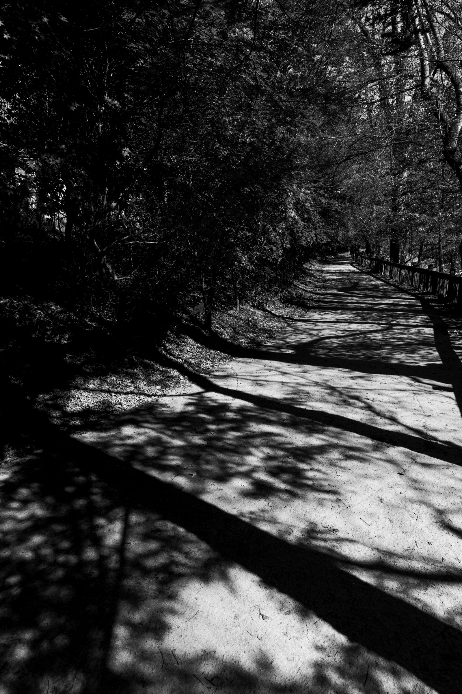
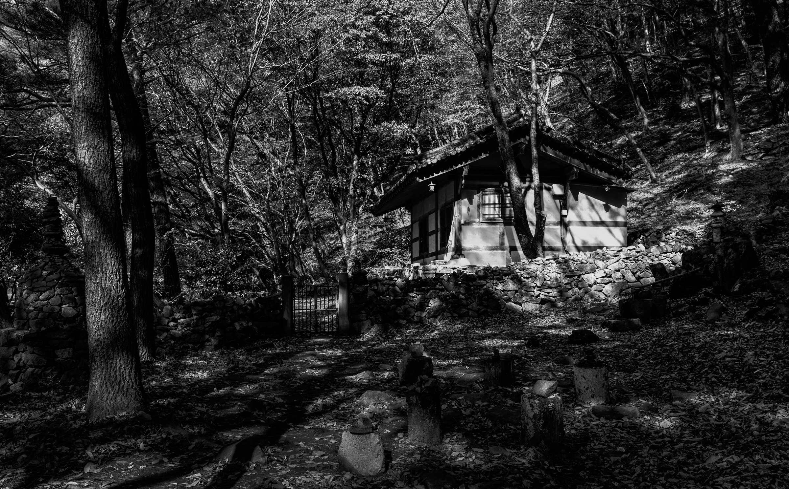
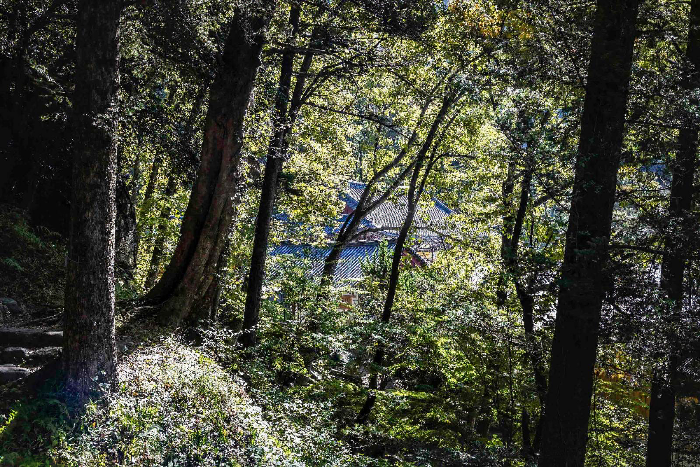
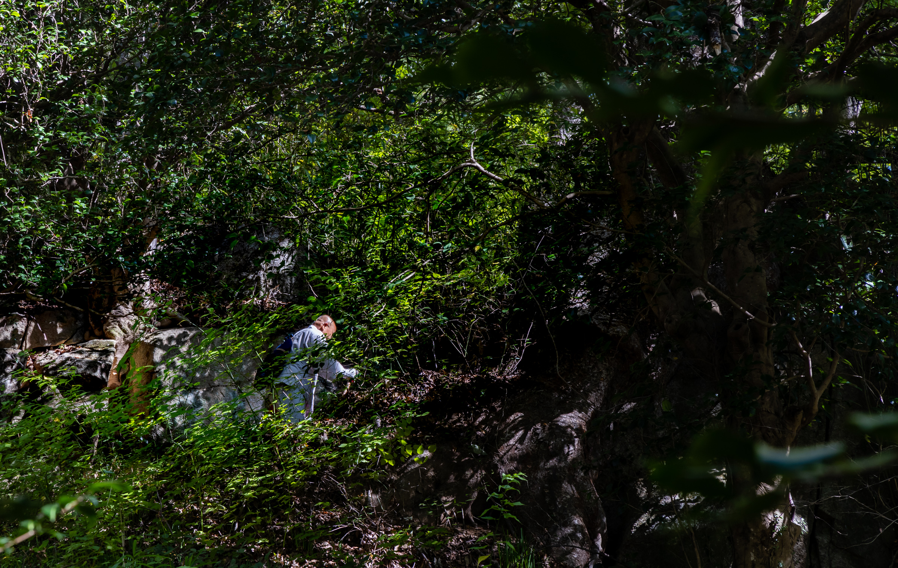
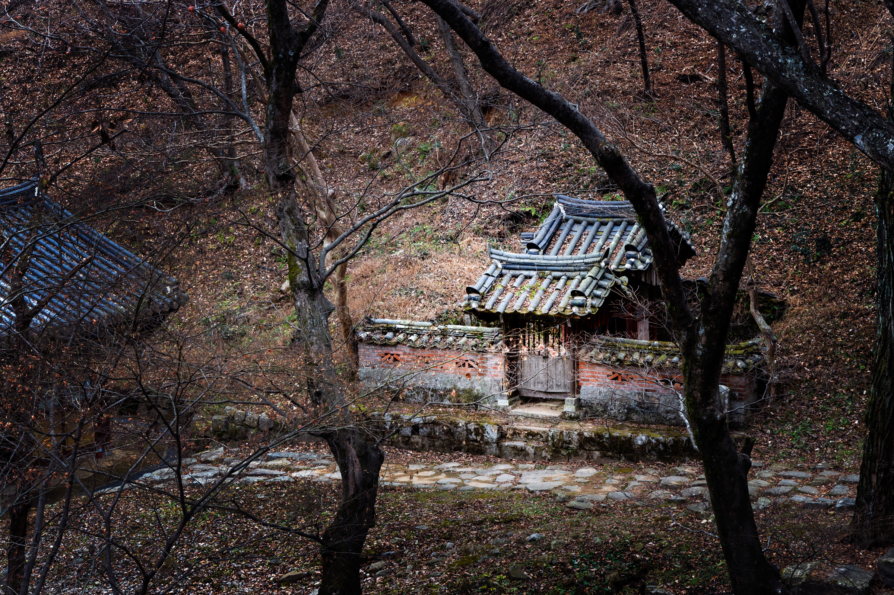
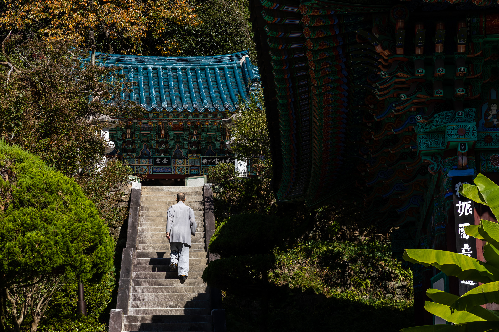
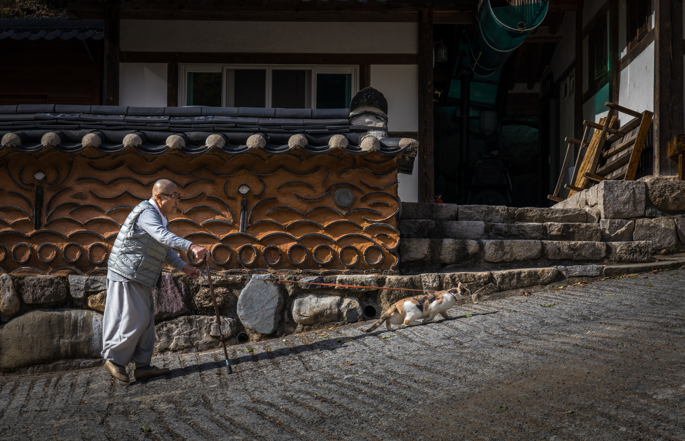
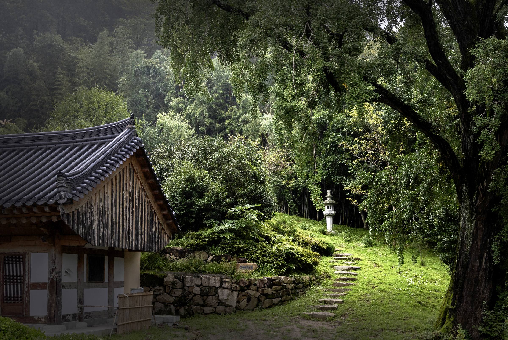
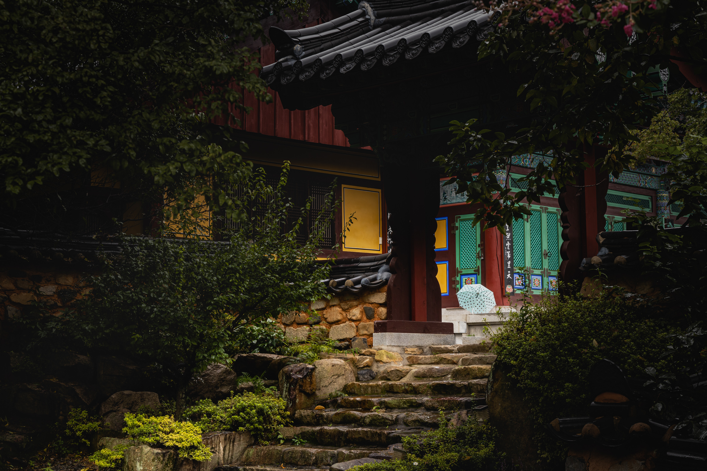
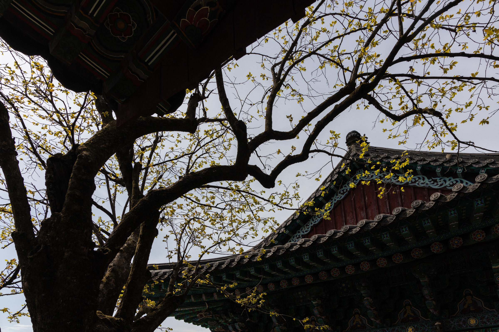
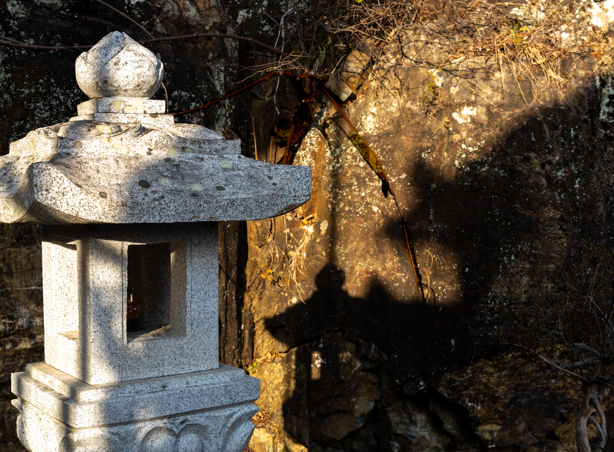
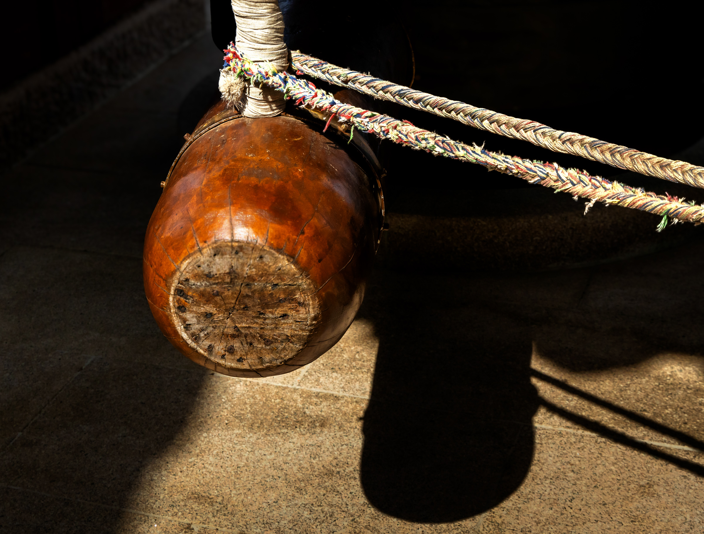
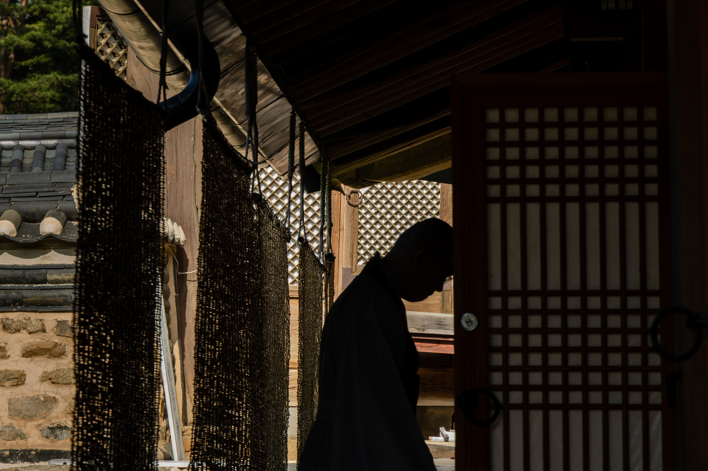
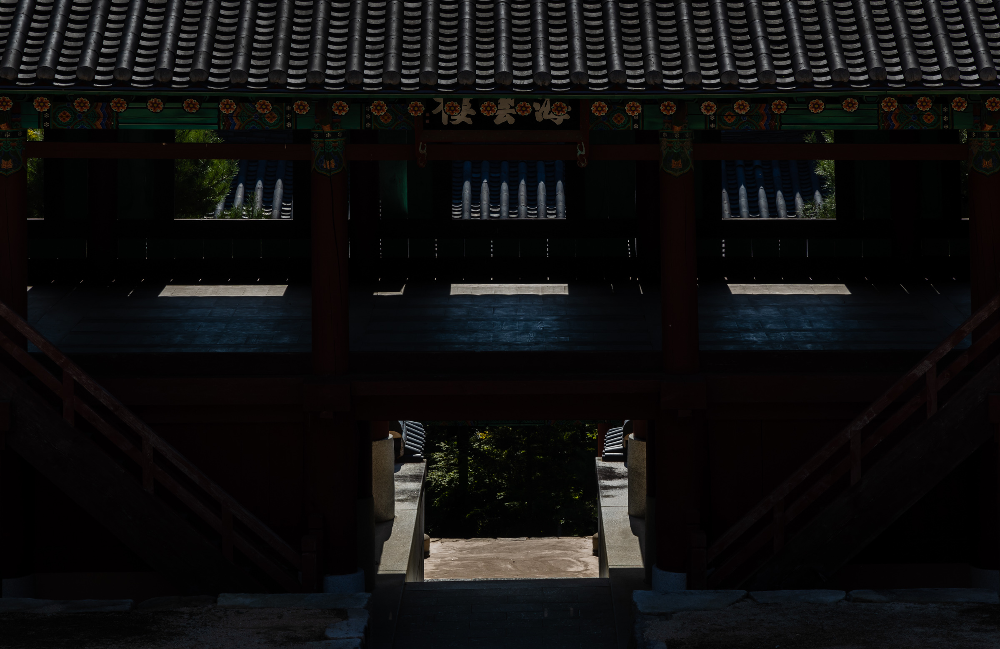

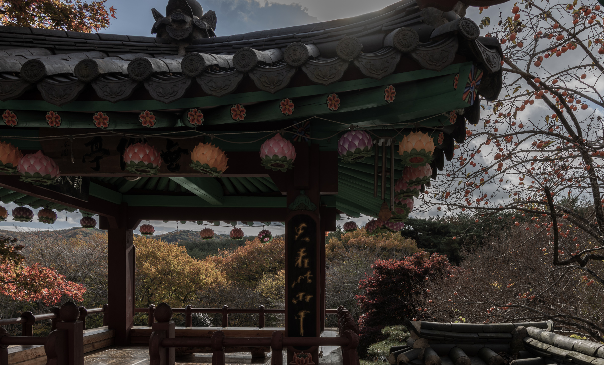